Em corrida, Hyrox e CrossFit, cada marca que você fecha num desafio ou numa partida de marca vira histórico: o app guarda o seu recorde em cada prova e mostra quanto você melhorou. E, se você treina com relógio, conecte o Apple Saúde ou a Polar para o tempo entrar sozinho na marca, com o selo do aparelho no ranking.
Onde ver o recorde, como ele evolui e como marcar o primeiro.
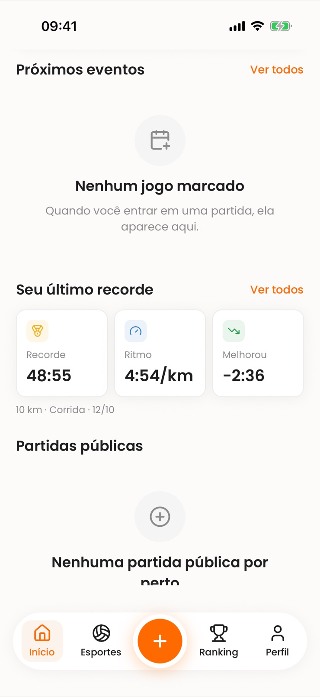
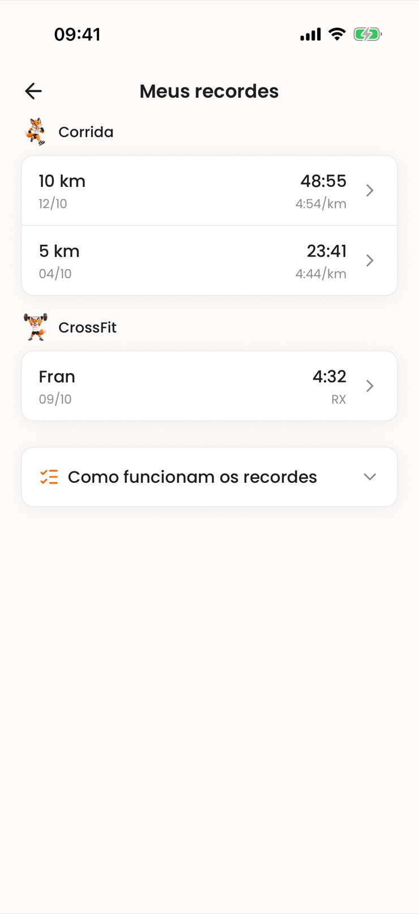
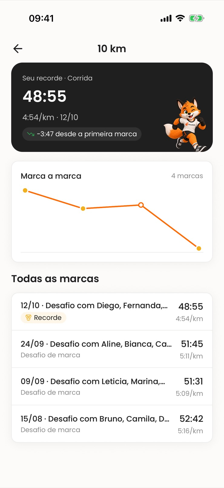
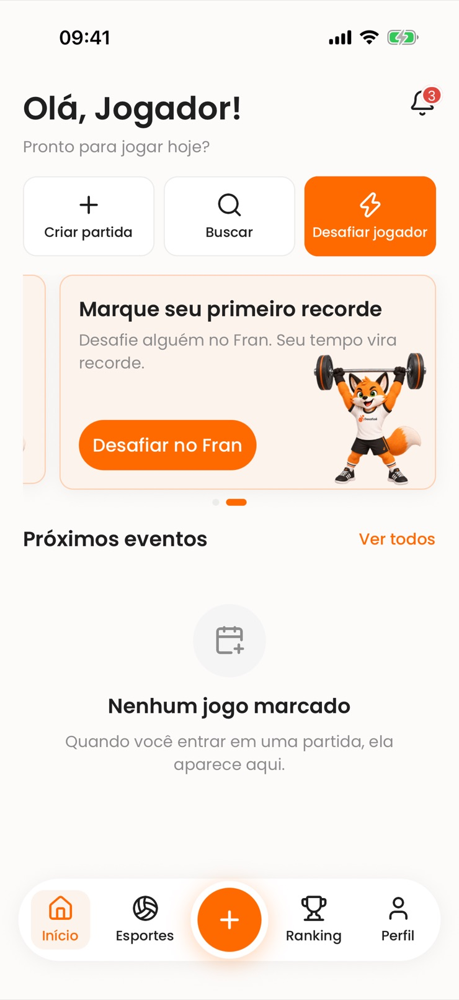
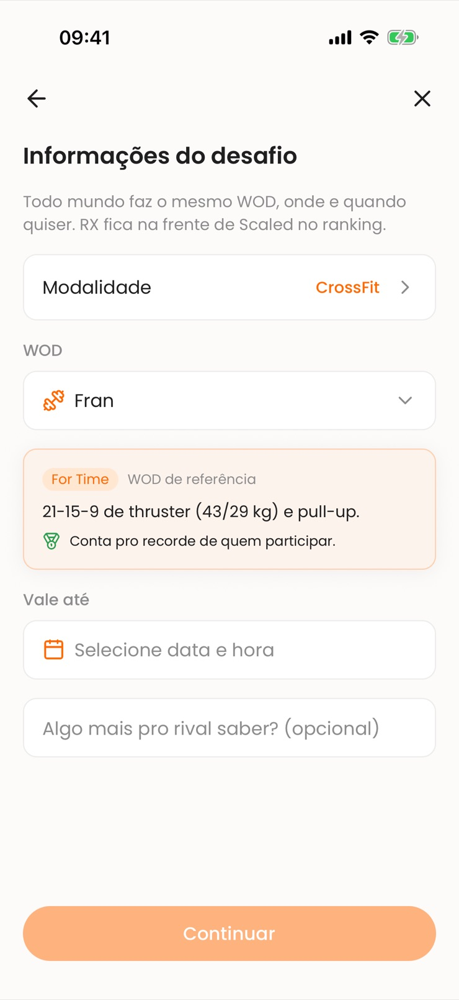
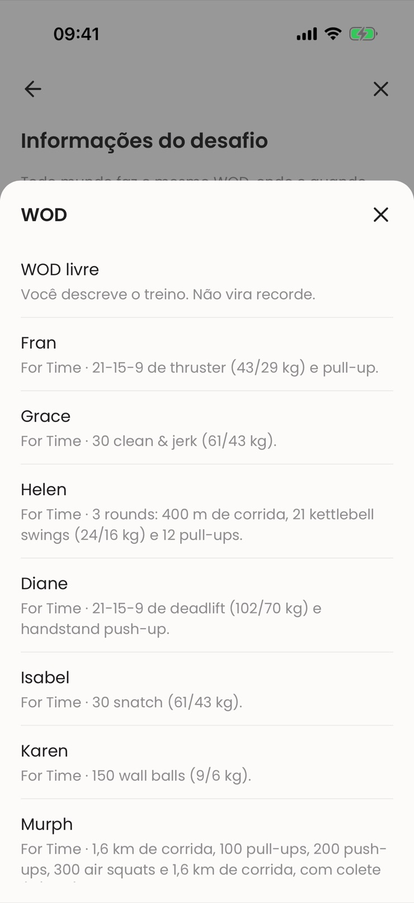
Conecte uma vez e o tempo do treino entra na sua marca, com o selo do aparelho.
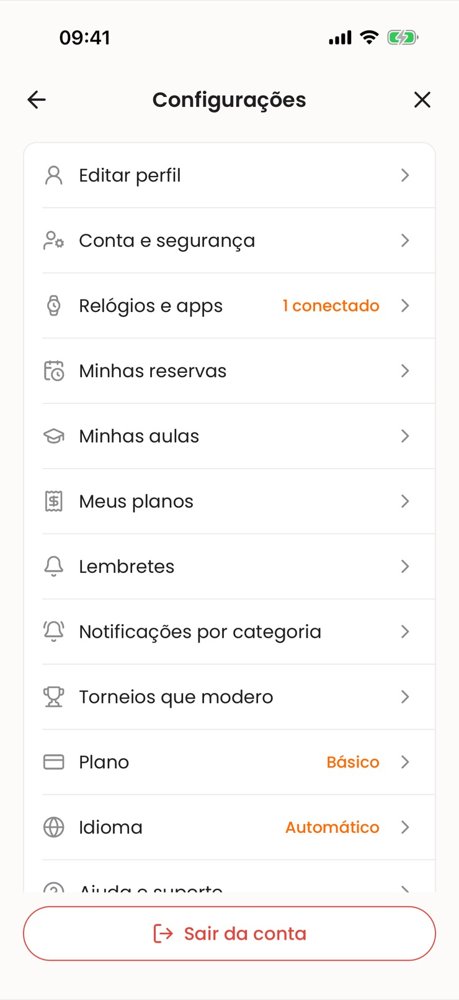
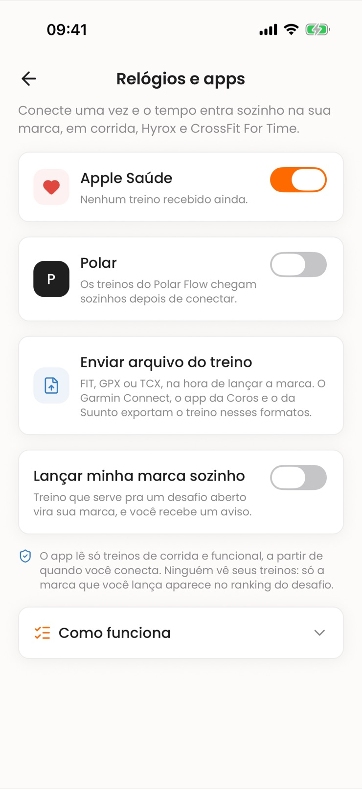
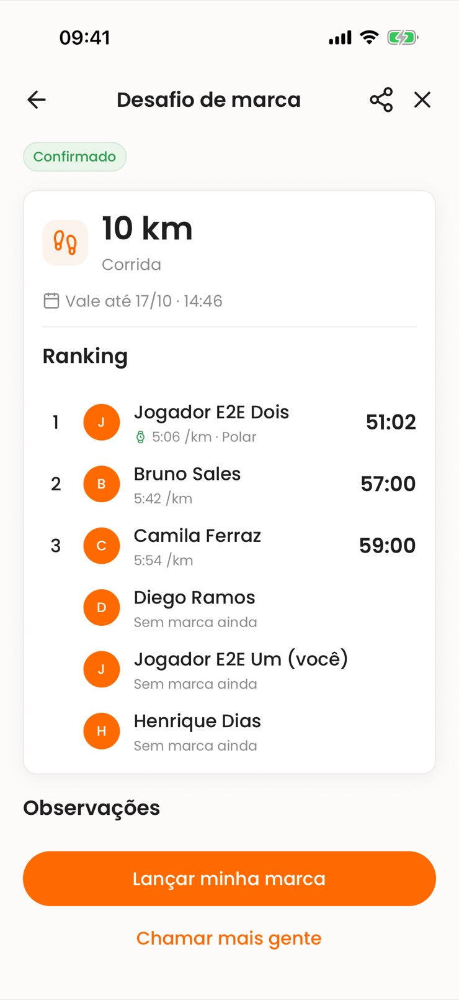
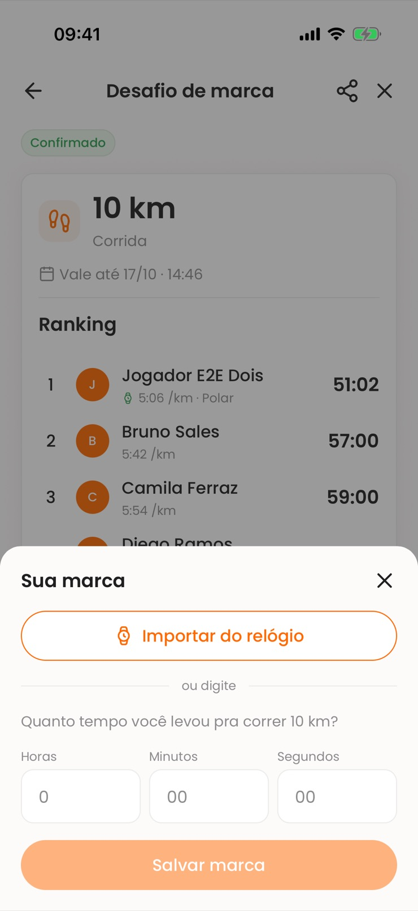
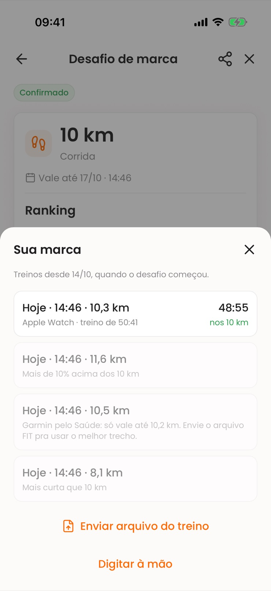
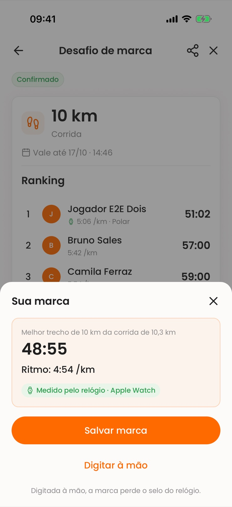
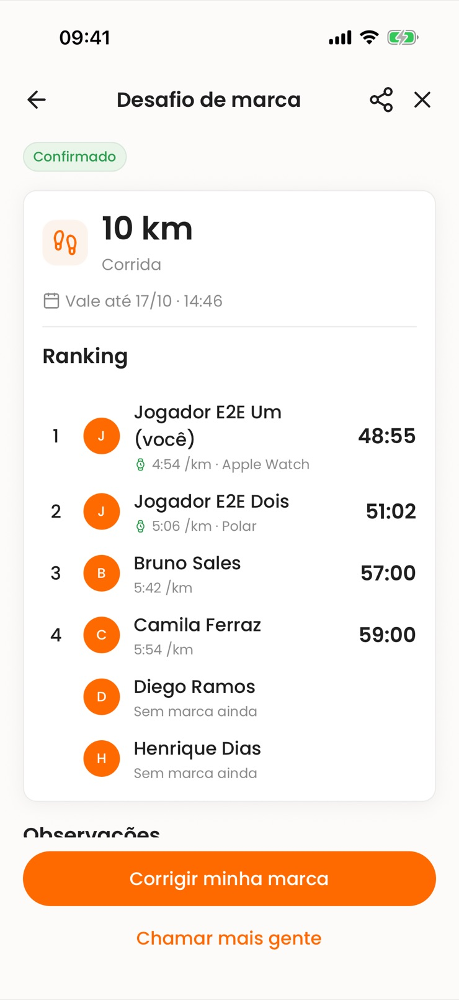
Quando o desafio ou a partida de marca encerra. Se ela for a sua melhor naquela prova, vira o recorde, e você recebe o aviso "Novo recorde". A primeira marca de uma prova também conta.
Só WOD de referência vira recorde. Se o desafio foi com "WOD livre", a marca vale para o desafio, mas não entra nos recordes.
Conta. O recorde do CrossFit é a melhor marca RX; enquanto você não tiver nenhuma RX naquele WOD, aparece a melhor Scaled.
Não. O recorde de cada prova é grátis, na Início e em Meus recordes. O gráfico e a lista de todas as marcas são do Premium e do Elite.
Funciona de dois jeitos: pelo Apple Saúde, se o relógio sincroniza com ele, ou enviando o arquivo do treino (FIT, GPX ou TCX) na hora de lançar a marca. O Garmin pelo Saúde chega sem os trechos da corrida, então vale o tempo total, e só se o treino tiver de 100% a 102% da distância. Para usar o melhor trecho, envie o arquivo FIT.
Não. O Apple Saúde só aparece no iPhone. No Android, use a Polar ou o envio do arquivo do treino.
Vale se o treino tiver até 10% a mais que a prova: o app usa o melhor trecho com a distância exata. Mais curto que a prova ou mais de 10% acima, não vale.
Não. Marca digitada nunca é apagada: o app pergunta se você quer usar o tempo do relógio. Com mais de um treino que serve, fica o melhor, e o treino vira a marca em todos os desafios abertos em que ele serve.
Não. O app lê só treinos de corrida e funcional, a partir de quando você conecta. No ranking aparece só a marca lançada, com o selo do aparelho.